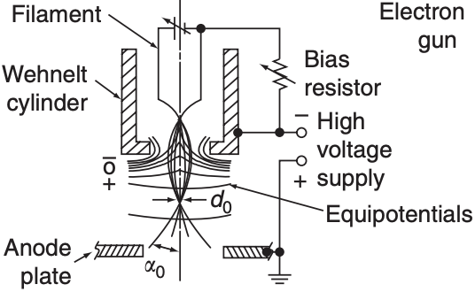

RHEED Setup
Reflection High Energy Electron Diffraction instrumentation.

The initial motivation for the electron gun was to be able to analyze samples grown by our group. While conducting further research, we realized how remarkably wide the applications of this device could be.
Most characterization techniques that use electron scattering require electron acceleration, which fundamentally relies on a high-performing electron gun. This core technology powers Scanning Electron Microscopes (SEMs), Transmission Electron Microscopes (TEMs), Electron Back-Scattered Diffraction (EBSD), and Reflection High Energy Electron Diffraction (RHEED)[cite: 2, 8].

02. Thermionic Emission
The system is composed of a thermionic electron source, a Wehnelt cylinder, a grounded anode, an einzel lens, and a scintillator[cite: 14, 15]. Our current setup accelerates electrons through a -1kV potential difference at a vacuum level of about 0.5 × 10-4 Torrs[cite: 10].
The Wehnelt cylinder is biased with respect to the cathode by about 40V to allow for a pinching of the electric field, acting as a pinhole to focus the emitted electrons[cite: 15, 16]. The massive potential difference between the cathode (at negative high voltage) and the anode (at ground) is what rapidly accelerates the electrons down the column[cite: 15].
Acceleration: -1kV Vacuum: 0.5 × 10-4 Torr03. Electron Optics
To properly guide the beam, we utilize an einzel lens—a 3-stage electrostatic system where the center stage holds a negative voltage while the outer two stages remain grounded. This configuration produces an electric field that converges the electrons to a focal point before they diverge again, behaving precisely like a traditional optical convex lens[cite: 41].